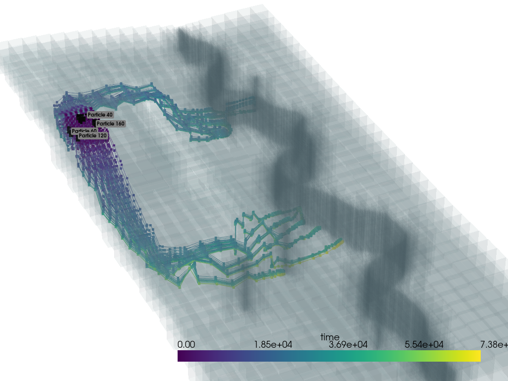

Part 1 flopy
01: Introduction to FloPy

02: Building and post-processing a MODFLOW 6 model
03: Loading and visualizing groundwater models

04: Modelgrid and intersection

05: Unstructured grid and general mesh generation with FloPy

06: FloPy class project: Structured grid version
06: FloPy class project: Quadtree grid version
06: FloPy class project: Voronoi grid version

07: Evaluating stream capture with a Voronoi grid

08: Modflow-setup demonstration
09: Demonstration of MODFLOW 6 Groundwater Transport with a Voronoi Grid
10a: Particle tracking with MODFLOW 6 PRT

10b: Particle tracking with MODPATH